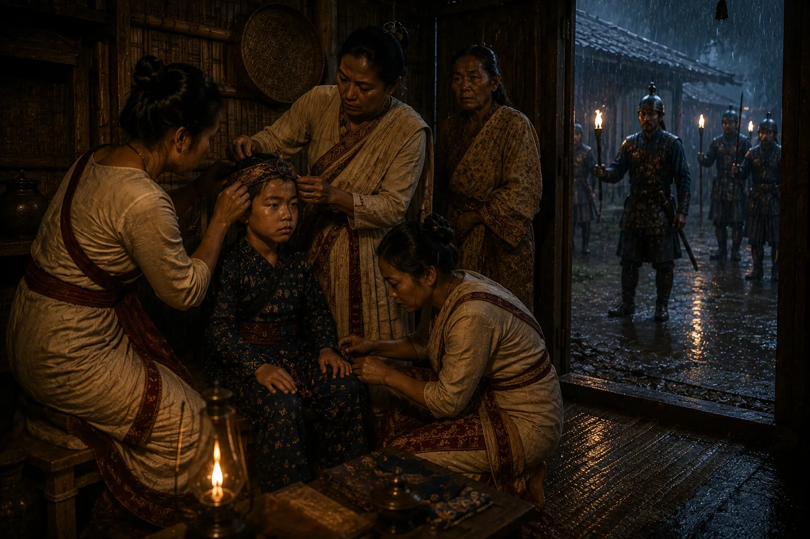

The Great Purge and Mutilation of Royal Princes
1679–1680 · Six kings in nine years

Laluk Sola and Sulikphaa unleash death squads across Assam to kill, blind, or slit the ears of all eligible Ahom princes to disqualify them from the throne.
Sources have not yet been catalogued for this record.
People: Sulikphaa (Ratnadhwaj Singha, Lora Roja)
Open this scene in the interactive archive · Follow this event on MAP